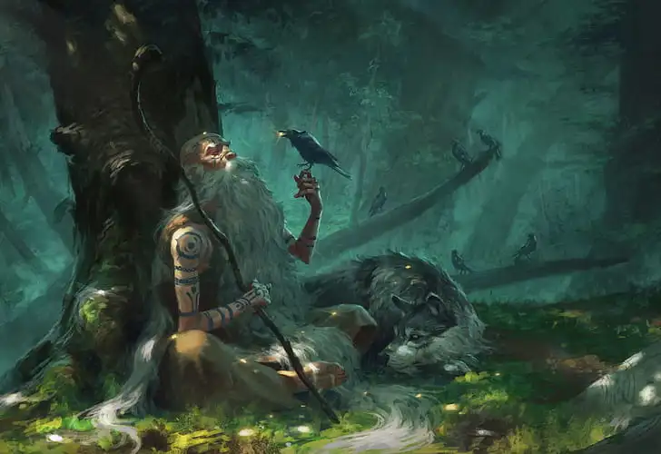

Es una clase que se especializa en lanzar hechizos, sin embargo sus transformaciones cubren sus flaquezas, ya que pueden transformarse en animales para ponerse a combatir cuerpo a cuerpo o escabullirse por lugares. Tinen una vida media y armadura media
Los druidas son una clase mágica peculiar, tienen hechizos muy orientados con la vegetación y los animales, que aunque parezcan algo específicos, no se quedan atras en cuanto a que pueden hacer. Pero lo más interesante de los druidas son sus transformaciones, pudiendo transformase en un gran oso capaz de ponerse a la cabeza de un ataque o convertirse en un pajaro pequeño capaz de espiar al enemigo